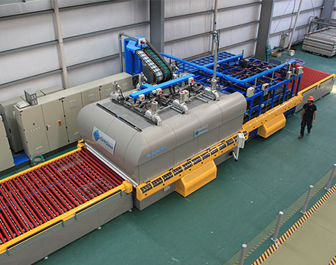
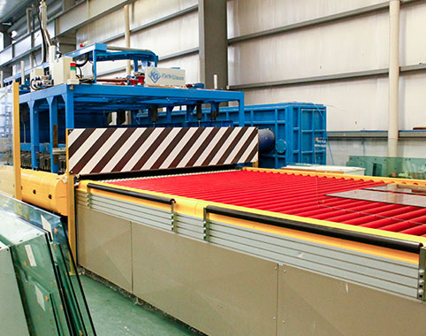
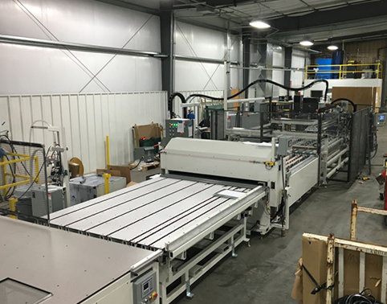
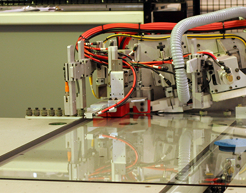
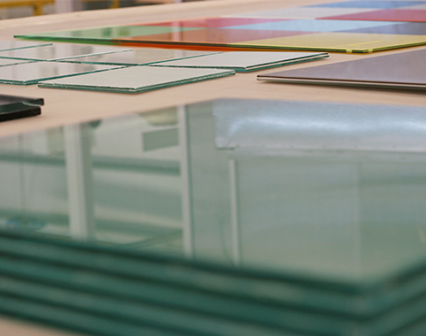
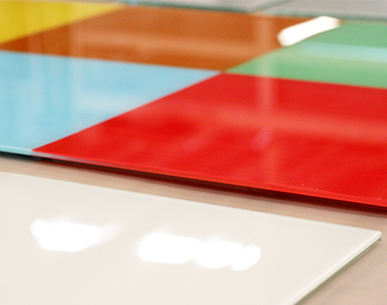

División Vidrios
Vidrios Templados
Estos vidrios, procesados térmicamente, se someten a calentamientos programados en intensidad y tiempos para luego ser enfriados de forma brusca (templados) o gradual (temoendurecidos) logrando de esta manera una dureza mayor que los vidrios de origen denominados "crudos". Al aumentar la dureza tienen un mejor comportamiento ante las posibles roturas producidas por impactos, movimientos estructurales o estress térmico. En el caso del vidrio "templado" su dureza crece 4 veces más respecto de un vidrio "crudo" y la rotura se produce de manera integral a manera de explosión en millones de partículas en forma de grano, minimizando heridas. En el caso del vidrio termoendurecido la dureza es dos veces mayor a un vidrio "crudo" y la rotura misma se produce en pedazos más grandes de forma similar a un vidrio "crudo". Este tipo de vidrios se utilizan en grandes vidrieras comerciales o unidades de Doble Vidriado Hermético sometidos a grandes esfuerzos, grandes dimensiones y especialmente en cubiertas y techos.
 Doble Vidriado Hermético
Producimos desde el año 1993 Termoclima® DVH con un tren de fabricación totalmente equipado e industrializado para la producción automatizada del Doble Vidriado Hermético para los sistemas orgánicos de espaciadores como el Swiggle Seal® y Duraseal®, ambos productos de Quanex® Building Products, de gran proyección e intervención en el mercado internacional. Transcurridos 25 años de producción y abastecimiento continuo podemos decir que La Casa de los Cristales® cuenta con la mayor experiencia y capacidad técnica en asesoramiento, producción y comercialización del Doble Vidriado Hermético del país. La Casa de los Cristales promueve y valoriza permanentemente la correcta utilización del Doble Vidriado Hermético en el país, haciendo de éste un producto de prestigio y calidad.
 Laminados Blindex
Ante un impacto, es difícil atravesar un vidrio laminado porque tiene la propiedad de contener a la persona u objeto que golpeó contra el vidrio. Ante su fractura, los trozos de vidrio rotos quedan adheridos a la lamina de PVB, manteniendo la visibilidad y la integridad del paño. Blindex Laminado, además: Aumenta la capacidad de aislación acústica de un cerramiento. Filtra la radiación UV, protegiendo el color de alfombras, tapizados, muebles y cortinas.
¡Conocé los usos recomendados!
Laminado EVA
El sistema de laminación EVA es un sistema de producción industrial que consiste en laminar uno o varios vidrios de cualquier tipo y espesor, intercalando una o varias láminas de Etileno Vinil Acetato (EVA) a partir de un proceso de succión y calentamiento, donde las piezas logran una adherencia en bloque conformando así un vidrio laminado de seguridad de mayor resistencia.
 